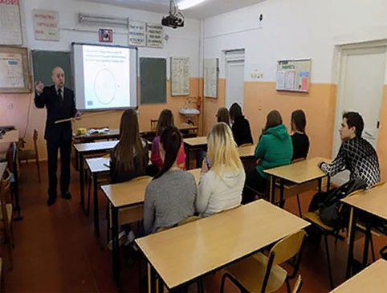

Наилучшее наслаждение для меня в жизни – это любимая работа
С раннего возраста все дети стремятся к умственному и физическому развитию. На меня больше всего
оказывали влияние и впечатления картины «Дети бегущие от грозы», «Грачи прилетели» и т. д., поэтому я
любил рисовать и мечтал быть художни-ком. Мне хотелось развиваться в коллективе, играть в шахматы, футбол,
учиться в школе. В школе я полюбил профессию учителя начальных классов. Коллеги, ученики стар-ших классов
много говорили о автомобилях, тракторах о профессии хлебороба.

Первая моя профессия была «Техник-механик сельского хозяйства» и я занимался подготов-кой водителей автомобилей,
механиза-торов для сельского хозяйства, затем повысил свою квалификацию до профессии «Инженер-механик сельского
хозяйства». С 1972 года XX века в России ввели всеобщее среднее образование, поддерживая это постановление получил
профессию учителя математики, а затем учителя информатики и ИКТ. Я люблю свою профессию и от этой работы получаю
достаточное развитие.
Работу выполнила студентка 27 группы , Ильченко Анна